Chapter 3 Time series decomposition
# loading libraries
library(tsibble)
library(tsibbledata)
library(tidyverse)
# to read data
library(rio)
library(ggplot2)
library(fabletools)
library(feasts)
library(fpp3)
library(latex2exp)
library(forecast)Components:
- Trend
- Cyclic
- Seasonal (some times there can be more than one seasonal component)
- Remainder component
3.1 Transformations and adjustments
To remove the source of variation or make the pattern core consistent across the data set, the following adjustments and transformation will be considered:
- calendar adjustments
- population adjustments
- inflation adjustments
- mathematical transformations
3.1.1 Calendar adjustments
Calendar adjustments of time series are important when dealing with time series data that are influenced by variations in the number of days in a month, public holidays, weekends, or other calendar-related factors. These adjustments help remove calendar effects and make the data more comparable over time.
For example… It is easy to remove this variation by computing average sales per trading day in each month, rather than total sales in the month.
3.1.2 Population adjustments
Any data that are affected by population changes can be adjusted to give per-capita data. That is, consider the data per person (or per thousand people, or per million people) rather than the total.
## # A tsibble: 6 x 9 [1Y]
## # Key: Country [1]
## Country Code Year GDP Growth CPI Imports Exports Population
## <fct> <fct> <dbl> <dbl> <dbl> <dbl> <dbl> <dbl> <dbl>
## 1 Afghanistan AFG 1960 537777811. NA NA 7.02 4.13 8996351
## 2 Afghanistan AFG 1961 548888896. NA NA 8.10 4.45 9166764
## 3 Afghanistan AFG 1962 546666678. NA NA 9.35 4.88 9345868
## 4 Afghanistan AFG 1963 751111191. NA NA 16.9 9.17 9533954
## 5 Afghanistan AFG 1964 800000044. NA NA 18.1 8.89 9731361
## 6 Afghanistan AFG 1965 1006666638. NA NA 21.4 11.3 99384143.1.3 Inflation adjustments
To make these adjustments, a price index is used. If \(z_t\) denotes the price index and \(y_t\) denotes the original house price in year \(t\), then \(x_t = y_t/z_t \times z_{2000}\) gives the adjusted house price at year 2000 dollar values. Price indexes are often constructed by government agencies. For consumer goods, a common price index is the Consumer Price Index (or CPI).
This allows us to compare the growth or decline of industries relative to a common price value. For example, looking at aggregate annual “newspaper and book” retail turnover from aus_retail, and adjusting the data for inflation using CPI from global_economy allows us to understand the changes over time.
# sum turnover for printing by year
print_retail <- aus_retail |> # monthly retail turnover in Australia in $M AUD
filter(Industry == 'Newspaper and book retailing') |> # filter printing
index_by(Year = year(Month)) |> # grouping by index (key: Month)
summarise(Turnover = sum(Turnover)) # summarise
# get all economic data by year for Aus
aus_economy <- global_economy |>
filter(Code == 'AUS')
print_retail |>
left_join(aus_economy, by='Year') |>
# Inflation adjustments
mutate(Adjusted_turnover_base2010 = Turnover / CPI * 100) |>
# ^^^ base value (2010)
pivot_longer(cols = c(Turnover, Adjusted_turnover_base2010),
values_to = 'Turnover') |>
mutate(name = factor(name, levels = c('Turnover', 'Adjusted_turnover_base2010'))) |>
ggplot(aes(x=Year, y = Turnover)) +
geom_line() +
facet_grid(name ~ ., scales = 'free_y') +
labs(title = 'Turnover: Australian print media industry',
y = '$AU')By adjusting for inflation using the CPI, we can see that Australia’s newspaper and book retailing industry has been in decline much longer than the original data suggests. The adjusted turnover is in 2010 Australian dollars, as CPI is 100 in 2010 in this data set.
3.1.4 Mathematical transformations
If the data shows variation that increases or decreases with the level of the series, then a transformation can be useful.
If we the original observations as \(y_1, ..., y_T\) and the transformed observations as \(w_1, ..., w_T\), then \(w_t = log(y_t)\). Changes in a log value are relative (or percentage) changes on the original scale.
If any value of the original series is zero or negative, then logarithms are not possible.
3.1.4.1 Box-Cox transformations
\[ w_t = \begin{cases} ln(y_t) & \lambda = 0; \\ \frac {(y_t + 1)^{\lambda}-1} {\lambda} & otherwise \end{cases} \]
# the optimal lambda
lambda <- BoxCox.lambda(aus_production$Gas)
print(paste('BoxCox lambda:', lambda))## [1] "BoxCox lambda: 0.10618213199493"aus_production |>
mutate(Gas_boxcox = BoxCox(Gas, BoxCox.lambda(Gas))) |>
autoplot(Gas_boxcox) +
labs(title = 'BoxCox transformed gas')aus_production |>
mutate(Gas_boxcox = box_cox(Gas, lambda)) |>
mutate(Gas_inv = inv_box_cox(Gas_boxcox, lambda)) |>
select(Gas, Gas_boxcox, Gas_inv)## # A tsibble: 218 x 4 [1Q]
## Gas Gas_boxcox Gas_inv Quarter
## <dbl> <dbl> <dbl> <qtr>
## 1 5 1.76 5.00 1956 Q1
## 2 6 1.97 6.00 1956 Q2
## 3 7 2.16 7 1956 Q3
## 4 6 1.97 6.00 1956 Q4
## 5 5 1.76 5.00 1957 Q1
## 6 7 2.16 7 1957 Q2
## 7 7 2.16 7 1957 Q3
## 8 6 1.97 6.00 1957 Q4
## 9 5 1.76 5.00 1958 Q1
## 10 7 2.16 7 1958 Q2
## # ℹ 208 more rowsChoosing \(\lambda\).
# way 1 - forecast pkg
print(paste('BoxCox lambda (BoxCox.lambda(...)):', BoxCox.lambda(aus_production$Gas)))## [1] "BoxCox lambda (BoxCox.lambda(...)): 0.10618213199493"## [1] "BoxCox lambda (guerrero(...)): 0.106187916462318"# way 3 - fabletools pkg
lambda <- aus_production |>
features(Gas, features = guerrero) |>
pull(lambda_guerrero)
print(paste('BoxCox lambda (features(..., features = guerrero)):', lambda))## [1] "BoxCox lambda (features(..., features = guerrero)): 0.109517112981612"3.2 Time series components
- Trend pattern exists when there is a long-term increase or decrease in the data
- Cyclic pattern exists when data exhibit rises and falls that are not of fixed period (duration usually of at least 2 years)
- Seasonal pattern exists when a series is influenced by seasonal factors (quarter, month, day of the week)
The additive decomposition of a time series is represented as:
\[Y_t = T_t + S_t + R_t\]
where:
- \(Y_t\) is the observed value at time \(t\),
- \(T_t\) is the trend component,
- \(S_t\) is the seasonal component,
- \(R_t\) is the residual (or random) component.
Trend is a smoothly changing component of a time series.
Seasonality is a strong periodic component with stable intensity.
The multiplicative decomposition of a time series is represented as:
\[Y_t = T_t \times S_t \times R_t\]
where:
- \(Y_t\) is the observed value at time \(t\),
- \(T_t\) is the trend component,
- \(S_t\) is the seasonal component,
- \(R_t\) is the residual (or random) component.
Transform additive to multiplicative:
\[ln(Y_t) = ln(T_t \times S_t \times R_t) = ln(T_t) + ln(S_t) + ln(R_t)\] ### Example: Employment in the US retail sector
us_retail_employment <- us_employment |>
filter(year(Month) >= 1990, Title == 'Retail Trade') |>
select(-Series_ID)
us_retail_employment |>
autoplot(Employed) +
labs(title = 'Total employment in US retail',
y = 'Persons, K')STL decomposition.
## # A dable: 357 x 7 [1M]
## # Key: .model [1]
## # : Employed = trend + season_year + remainder
## .model Month Employed trend season_year remainder season_adjust
## <chr> <mth> <dbl> <dbl> <dbl> <dbl> <dbl>
## 1 stl 1990 Jan 13256. 13288. -33.0 0.836 13289.
## 2 stl 1990 Feb 12966. 13269. -258. -44.6 13224.
## 3 stl 1990 Mar 12938. 13250. -290. -22.1 13228.
## 4 stl 1990 Apr 13012. 13231. -220. 1.05 13232.
## 5 stl 1990 May 13108. 13211. -114. 11.3 13223.
## 6 stl 1990 Jun 13183. 13192. -24.3 15.5 13207.
## 7 stl 1990 Jul 13170. 13172. -23.2 21.6 13193.
## 8 stl 1990 Aug 13160. 13151. -9.52 17.8 13169.
## 9 stl 1990 Sep 13113. 13131. -39.5 22.0 13153.
## 10 stl 1990 Oct 13185. 13110. 61.6 13.2 13124.
## # ℹ 347 more rowsdcmp |>
components() |>
as_tsibble() |>
autoplot(Employed, color = 'gray') +
geom_line(aes(y=trend), color = 'orange') +
labs(y = 'Persons, K',
title = 'Total employment in US retail')Notice that the seasonal component changes over time, so that any two consecutive years have similar patterns, but years far apart may have different seasonal patterns.
3.2.1 Seasonally adjusted data
If the seasonal component is removed from the original data, the resulting values are the “seasonally adjusted” data. For an additive decomposition, the seasonally adjusted data are given by \(y_t − S_t\), and for multiplicative data, the seasonally adjusted values are obtained using \(y_t/S_t\).
dcmp |>
components() |>
as_tsibble() |> # <<<<<<<<!!!!!!!!!!!
autoplot(Employed, color = 'gray') +
geom_line(aes(y=season_adjust), color = 'blue') +
labs(y = 'Persons, K',
title = 'Total employment in US retail')If the purpose is to look for turning points in a series, and interpret any changes in direction, then it is better to use the trend-cycle component rather than the seasonally adjusted data.
3.3 Moving averages
3.3.1 Moving average smoothing
\(m\)-MA, or a moving average of order m:
\[ \hat{T_t} = \frac {1} {m} \sum_{j=-k}^k y_{t+j}, \text{where} \space m = 2k + 1 \]
Moving average removes seasonal fluctuations and allows to estimate trend-cycle.
global_economy |>
filter(Code == 'AUS') |>
autoplot(Exports) +
labs(title = 'Total Australian exports', y = '% of GDP')
Computing 5-MA.
# m = 5 => (5 - 1)/2 = 2 = k
global_economy |>
filter(Code == 'AUS') |>
mutate(`5-MA` = slider::slide_dbl(Exports, mean, .before = 2, .after = 2,
.complete = T)) |>
select(Exports, `5-MA`)## # A tsibble: 58 x 3 [1Y]
## Exports `5-MA` Year
## <dbl> <dbl> <dbl>
## 1 13.0 NA 1960
## 2 12.4 NA 1961
## 3 13.9 13.5 1962
## 4 13.0 13.5 1963
## 5 14.9 13.6 1964
## 6 13.2 13.4 1965
## 7 12.9 13.3 1966
## 8 12.9 12.7 1967
## 9 12.3 12.6 1968
## 10 12.0 12.6 1969
## # ℹ 48 more rowsglobal_economy |>
filter(Code == 'AUS') |>
mutate(`5-MA` = slider::slide_dbl(Exports, mean, .before = 2, .after = 2,
.complete = T)) |>
autoplot(Exports) +
geom_line(aes(y = `5-MA`), color = 'red') +
labs(title = 'Total Australian exports', y = '% of GDP')## Warning: Removed 4 rows containing missing values or values outside the scale range (`geom_line()`).The order of the moving average determines the smoothness of the trend-cycle extimate.
global_economy |>
filter(Code == 'AUS') |>
mutate(`3-MA` = slider::slide_dbl(Exports, mean, .before = 1, .after = 1,
.complete = T),
`5-MA` = slider::slide_dbl(Exports, mean, .before = 2, .after = 2,
.complete = T),
`7-MA` = slider::slide_dbl(Exports, mean, .before = 3, .after = 3,
.complete = T),
`9-MA` = slider::slide_dbl(Exports, mean, .before = 4, .after = 4,
.complete = T),
`11-MA` = slider::slide_dbl(Exports, mean, .before = 5, .after = 5,
.complete = T),
`13-MA` = slider::slide_dbl(Exports, mean, .before = 6, .after = 6,
.complete = T)) |>
pivot_longer(cols=c(`3-MA`, `5-MA`, `7-MA`, `9-MA`, `11-MA`, `13-MA`),
values_to = 'ma_value') |>
mutate(name = factor(name, levels=c('3-MA', '5-MA', '7-MA',
'9-MA', '11-MA', '13-MA'))) |>
autoplot(Exports, color = 'gray') +
geom_line(aes(y = ma_value), color = 'red') +
labs(title = 'Total Australian exports', y = '% of GDP') +
facet_wrap(name ~ ., scales = 'free_y', ncol = 2) +
theme(legend.position = 'none')This is so they are symmetric: in a moving average of order \(m = 2k + 1\), the middle observation, and \(k\) observations on either side, are averaged. But if \(m\) was even, it would no longer be symmetric.
3.3.2 Moving averages of moving averages
To make an even-order moving average symmetric, apply a moving average to moving average.
aus_production |>
filter(year(Quarter) >= 1992) |>
select(Quarter, Beer) |>
mutate(`4-MA` = slider::slide_dbl(Beer, mean, .before = 1, .after = 2,
.complete = TRUE),
`2x4-MA` = slider::slide_dbl(`4-MA`, mean, .before = 1, .after = 0,
.complete = TRUE))## # A tsibble: 74 x 4 [1Q]
## Quarter Beer `4-MA` `2x4-MA`
## <qtr> <dbl> <dbl> <dbl>
## 1 1992 Q1 443 NA NA
## 2 1992 Q2 410 451. NA
## 3 1992 Q3 420 449. 450
## 4 1992 Q4 532 452. 450.
## 5 1993 Q1 433 449 450.
## 6 1993 Q2 421 444 446.
## 7 1993 Q3 410 448 446
## 8 1993 Q4 512 438 443
## 9 1994 Q1 449 441. 440.
## 10 1994 Q2 381 446 444.
## # ℹ 64 more rows## Time Series:
## Start = 1
## End = 74
## Frequency = 1
## [1] NA NA 450.000 450.125 450.250 446.500 446.000 443.000 439.625 443.625 443.125 443.625 446.125 443.875 440.375 437.000 433.500 429.625 430.875 433.750
## [21] 434.750 438.125 440.000 439.375 438.875 437.375 437.125 436.250 437.125 440.250 439.000 439.625 440.750 436.875 438.000 439.000 436.500 435.750 431.875 432.500
## [41] 434.750 435.250 437.875 435.250 433.625 433.500 431.500 432.750 432.875 427.250 420.375 419.625 420.750 423.750 430.000 430.625 428.125 428.875 428.625 426.875
## [61] 425.125 421.500 418.375 418.375 421.250 425.125 426.375 426.750 428.875 430.000 429.875 426.750 NA NA\(2 \times m\)-MA:
\[ \hat{T_t} = \frac {1} {2} \left[ \frac {1} {m} \sum_{j=-k}^k y_{t+j} \right], \text{where} \space m = 2k \]
In general, an even order MA should be followed by an even order MA to make it symmetric. Similarly, an odd order MA should be followed by an odd order MA.
aus_production |>
filter(year(Quarter) >= 1992) |>
select(Quarter, Beer) |>
mutate(`3-MA` = slider::slide_dbl(Beer, mean, .before = 1, .after = 1,
.complete = TRUE),
`3x3-MA` = slider::slide_dbl(`3-MA`, mean, .before = 1, .after = 1,
.complete = TRUE))## # A tsibble: 74 x 4 [1Q]
## Quarter Beer `3-MA` `3x3-MA`
## <qtr> <dbl> <dbl> <dbl>
## 1 1992 Q1 443 NA NA
## 2 1992 Q2 410 424. NA
## 3 1992 Q3 420 454 447.
## 4 1992 Q4 532 462. 459.
## 5 1993 Q1 433 462 448.
## 6 1993 Q2 421 421. 444.
## 7 1993 Q3 410 448. 442
## 8 1993 Q4 512 457 451.
## 9 1994 Q1 449 447. 441.
## 10 1994 Q2 381 418. 437.
## # ℹ 64 more rows3.3.3 Estimating the trend-cycle with seasonal data
If the seasonal period is even and of order \(m\), we use a \(2 \times m\)-MA to estimate the trend-cycle. If the seasonal period is odd and of order \(m\), we use a \(m\)-MA to estimate the trend-cycle. For example, a 2×12-MA can be used to estimate the trend-cycle of monthly data with annual seasonality and a 7-MA can be used to estimate the trend-cycle of daily data with a weekly seasonality.
3.3.4 Example: Employment in the US retail sector
us_retail_employment |>
mutate(`12-MA` = slider::slide_dbl(Employed, mean, .before=5,
.after = 6, .complete = TRUE),
`2x12-MA` = slider::slide_dbl(`12-MA`, mean, .before=1,
.after = 0, .complete = TRUE)) |>
autoplot(Employed, color = 'gray') +
geom_line(aes(y=`2x12-MA`), color = 'red') +
labs(y = "Persons (thousands)",
title = "Total employment in US retail")
3.3.5 Weighted moving averages
\[ \hat{T_t} = \sum_{j=-k}^k a_j y_{t+j}, \text{where} \space k = (m - 1)/2 \]
and the weights are given by \([a_{−k}, ...,a_k]\). It is important that the weights all sum to one and that they are symmetric so that \(a_j = a_{−j}\). The simple \(m\)-MA is a special case where all of the weights are equal to \(1/m\).
A major advantage of weighted moving averages is that they yield a smoother estimate of the trend-cycle.
3.4 Classical decomposition
Classical decomposition:
- Additive decomposition
- Multiplicative decomposition
3.4.1 Additive decomposition
Step 1
Compute \(\hat T_t\) using:- \(2 \times m\)-MA, if \(m\) is an even number
- \(m\)-MA, if \(m\) is an odd number
Step 2
Calculate the detrended series: \(y_t - \hat T_t\)Step 3
To estimate the seasonal component \(\hat S_t\) for each season, simply average the detrended values for that season.Step 4
\[ \hat R_t = y_t - \hat T_t - \hat S_t \]
# classical decomposition
us_retail_employment |>
model(classical_decomposition(Employed, type='add')) |>
components() |>
autoplot() +
labs(title = "Classical additive decomposition of total
US retail employment")## Warning: Removed 6 rows containing missing values or values outside the scale range (`geom_line()`).3.4.2 Multiplicative decomposition
Step 1
Compute \(\hat T_t\) using:- \(2 \times m\)-MA, if \(m\) is an even number
- \(m\)-MA, if \(m\) is an odd number
Step 2
Calculate the detrended series: \(y_t / \hat T_t\)Step 3
To estimate the seasonal component \(\hat S_t\) for each season, simply average the detrended values for that season.Step 4
\[ \hat R_t = y_t /( \hat T_t \hat S_t) \] ## STL decomposition
STL decomposition only provides facilities for additive decompositions. A multiplicative decomposition can be obtained by first taking logs of the data, then back-transforming the components. Decompositions that are between additive and multiplicative can be obtained using a Box-Cox transformation of the data with \(0 < \lambda < 1\). A value of $= 0 $ gives a multiplicative decomposition while \(\lambda = 1\) gives an additive decomposition.
us_retail_employment |>
model(stl = STL(Employed ~ trend(window = 7) +
season(window = 'periodic'), robust = TRUE)) |>
components()## # A dable: 357 x 7 [1M]
## # Key: .model [1]
## # : Employed = trend + season_year + remainder
## .model Month Employed trend season_year remainder season_adjust
## <chr> <mth> <dbl> <dbl> <dbl> <dbl> <dbl>
## 1 stl 1990 Jan 13256. 13250. -83.1 88.7 13339.
## 2 stl 1990 Feb 12966. 13234. -279. 11.1 13245.
## 3 stl 1990 Mar 12938. 13220. -266. -15.4 13204.
## 4 stl 1990 Apr 13012. 13206. -190. -3.00 13203.
## 5 stl 1990 May 13108. 13197. -91.0 2.48 13199.
## 6 stl 1990 Jun 13183. 13189. -9.67 3.44 13192.
## 7 stl 1990 Jul 13170. 13181. -8.50 -2.14 13179.
## 8 stl 1990 Aug 13160. 13172. -6.51 -6.04 13166.
## 9 stl 1990 Sep 13113. 13158. -86.0 41.3 13199.
## 10 stl 1990 Oct 13185. 13139. 43.7 2.88 13141.
## # ℹ 347 more rowsus_retail_employment |>
model(stl = STL(Employed ~ trend(window = 7) +
season(window = 'periodic'), robust = TRUE)) |>
components() |>
autoplot()
The main parameters:
trend(window = ?)controls how rapidly the trend-cycle components can change.season(window = ?)controls how rapidly the seasonal components can change.
Both trend and seasonal windows should be odd numbers. Setting the seasonal window to be infinite is equivalent to forcing the seasonal component to be periodic.
3.5 Excercises
# Plot the GDP per capita for each country over time.
for(country in (global_economy |> distinct(Country))$Country){
gdp <- global_economy |>
filter(Country == country) |>
mutate(GDP_per_capita = GDP / Population) |>
autoplot(GDP_per_capita) +
facet_grid(Country ~ ., scales = 'free_y') +
labs(title = 'GDP per capita', subtitle = country, y = ' $USD per capita') +
theme(legend.position = 'none')
print(gdp)
}## Warning: Removed 24 rows containing missing values or values outside the scale range (`geom_line()`).## Warning: Removed 42 rows containing missing values or values outside the scale range (`geom_line()`).## Warning: Removed 10 rows containing missing values or values outside the scale range (`geom_line()`).## Warning: Removed 20 rows containing missing values or values outside the scale range (`geom_line()`).## Warning: Removed 17 rows containing missing values or values outside the scale range (`geom_line()`).## Warning: Removed 8 rows containing missing values or values outside the scale range (`geom_line()`).
## Warning: Removed 2 rows containing missing values or values outside the scale range (`geom_line()`).## Warning: Removed 30 rows containing missing values or values outside the scale range (`geom_line()`).## Warning: Removed 26 rows containing missing values or values outside the scale range (`geom_line()`).## Warning: Removed 30 rows containing missing values or values outside the scale range (`geom_line()`).## Warning: Removed 20 rows containing missing values or values outside the scale range (`geom_line()`).## Warning: Removed 14 rows containing missing values or values outside the scale range (`geom_line()`).## Warning: Removed 30 rows containing missing values or values outside the scale range (`geom_line()`).

## Warning: Removed 4 rows containing missing values or values outside the scale range (`geom_line()`).
## Warning: Removed 20 rows containing missing values or values outside the scale range (`geom_line()`).## Warning: Removed 34 rows containing missing values or values outside the scale range (`geom_line()`).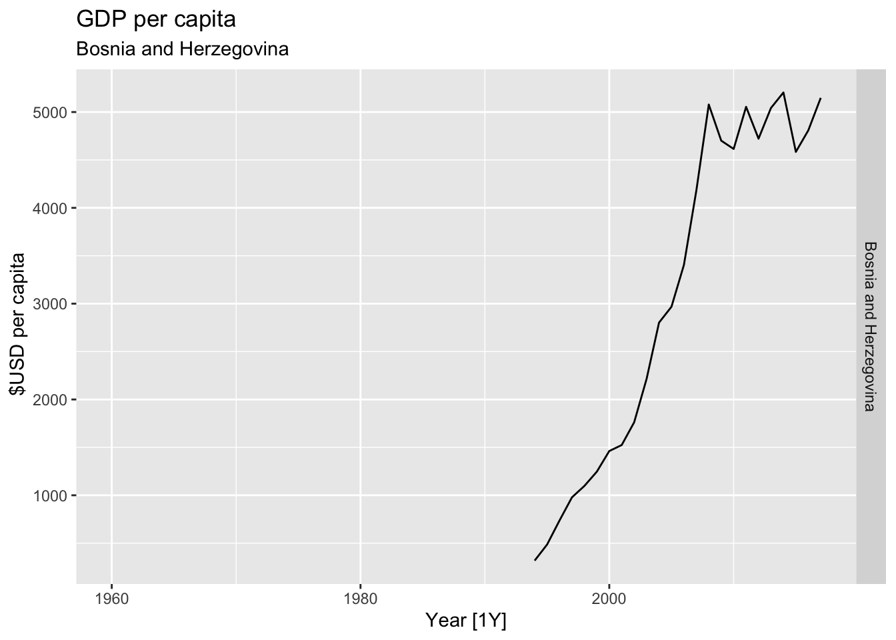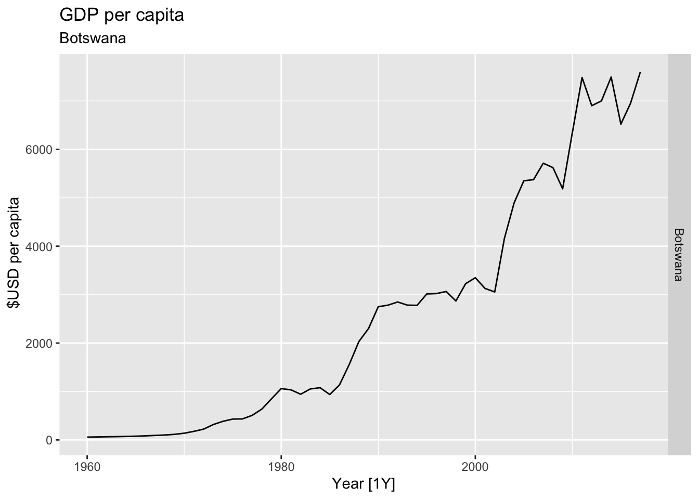
## Warning: Removed 58 rows containing missing values or values outside the scale range (`geom_line()`).## Warning: Removed 5 rows containing missing values or values outside the scale range (`geom_line()`).## Warning: Removed 20 rows containing missing values or values outside the scale range (`geom_line()`).## Warning: Removed 20 rows containing missing values or values outside the scale range (`geom_line()`).## Warning: Removed 56 rows containing missing values or values outside the scale range (`geom_line()`).## Warning: Removed 30 rows containing missing values or values outside the scale range (`geom_line()`).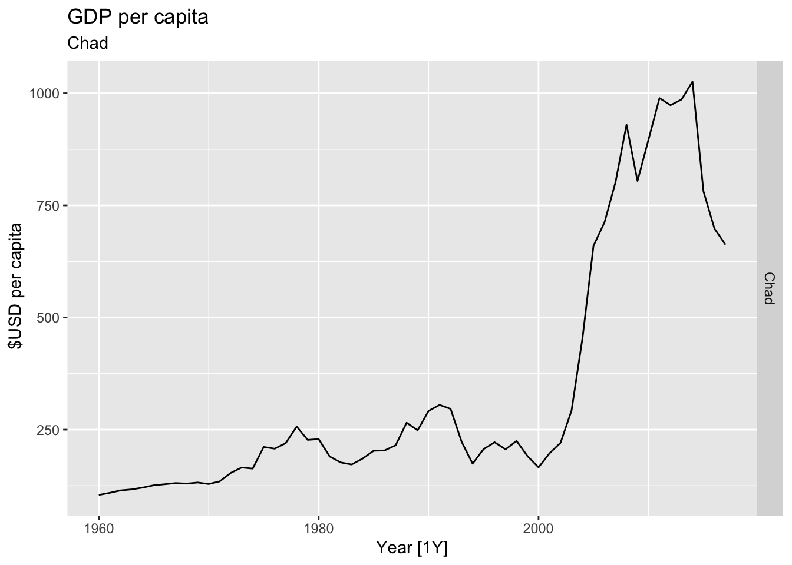
## Warning: Removed 48 rows containing missing values or values outside the scale range (`geom_line()`).## Warning: Removed 20 rows containing missing values or values outside the scale range (`geom_line()`).
## Warning: Removed 35 rows containing missing values or values outside the scale range (`geom_line()`).## Warning: Removed 10 rows containing missing values or values outside the scale range (`geom_line()`).## Warning: Removed 58 rows containing missing values or values outside the scale range (`geom_line()`).## Warning: Removed 15 rows containing missing values or values outside the scale range (`geom_line()`).## Warning: Removed 30 rows containing missing values or values outside the scale range (`geom_line()`).## Warning: Removed 25 rows containing missing values or values outside the scale range (`geom_line()`).## Warning: Removed 17 rows containing missing values or values outside the scale range (`geom_line()`).## Warning: Removed 5 rows containing missing values or values outside the scale range (`geom_line()`).## Warning: Removed 5 rows containing missing values or values outside the scale range (`geom_line()`).## Warning: Removed 2 rows containing missing values or values outside the scale range (`geom_line()`).## Warning: Removed 32 rows containing missing values or values outside the scale range (`geom_line()`).## Warning: Removed 35 rows containing missing values or values outside the scale range (`geom_line()`).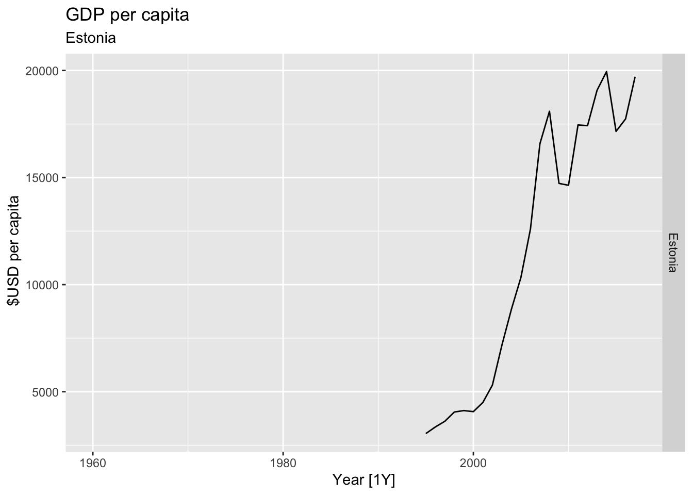
## Warning: Removed 21 rows containing missing values or values outside the scale range (`geom_line()`).## Warning: Removed 29 rows containing missing values or values outside the scale range (`geom_line()`).## Warning: Removed 29 rows containing missing values or values outside the scale range (`geom_line()`).## Warning: Removed 40 rows containing missing values or values outside the scale range (`geom_line()`).## Warning: Removed 40 rows containing missing values or values outside the scale range (`geom_line()`).## Warning: Removed 22 rows containing missing values or values outside the scale range (`geom_line()`).## Warning: Removed 6 rows containing missing values or values outside the scale range (`geom_line()`).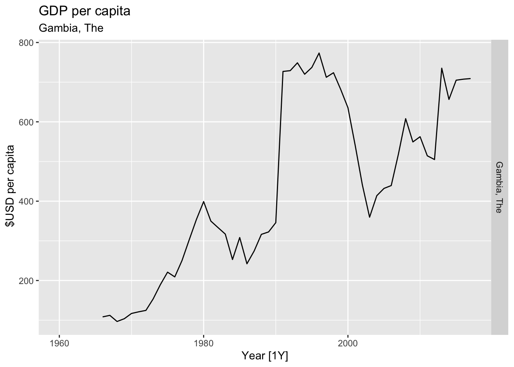
## Warning: Removed 30 rows containing missing values or values outside the scale range (`geom_line()`).## Warning: Removed 10 rows containing missing values or values outside the scale range (`geom_line()`).## Warning: Removed 58 rows containing missing values or values outside the scale range (`geom_line()`).## Warning: Removed 11 rows containing missing values or values outside the scale range (`geom_line()`).## Warning: Removed 17 rows containing missing values or values outside the scale range (`geom_line()`).## Warning: Removed 42 rows containing missing values or values outside the scale range (`geom_line()`).## Warning: Removed 26 rows containing missing values or values outside the scale range (`geom_line()`).
## Warning: Removed 10 rows containing missing values or values outside the scale range (`geom_line()`).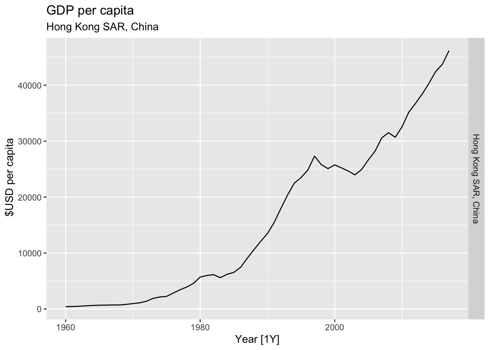
## Warning: Removed 31 rows containing missing values or values outside the scale range (`geom_line()`).## Warning: Removed 7 rows containing missing values or values outside the scale range (`geom_line()`).
## Warning: Removed 36 rows containing missing values or values outside the scale range (`geom_line()`).## Warning: Removed 5 rows containing missing values or values outside the scale range (`geom_line()`).## Warning: Removed 30 rows containing missing values or values outside the scale range (`geom_line()`).## Warning: Removed 10 rows containing missing values or values outside the scale range (`geom_line()`).## Warning: Removed 58 rows containing missing values or values outside the scale range (`geom_line()`).## Warning: Removed 40 rows containing missing values or values outside the scale range (`geom_line()`).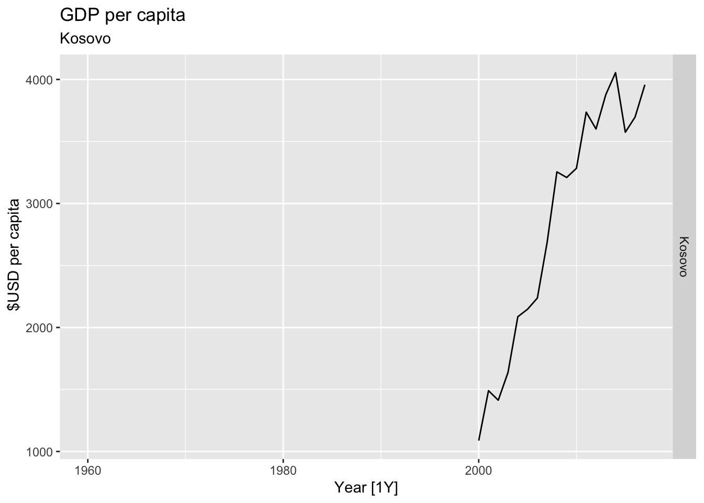
## Warning: Removed 5 rows containing missing values or values outside the scale range (`geom_line()`).## Warning: Removed 30 rows containing missing values or values outside the scale range (`geom_line()`).## Warning: Removed 24 rows containing missing values or values outside the scale range (`geom_line()`).## Warning: Removed 35 rows containing missing values or values outside the scale range (`geom_line()`).## Warning: Removed 20 rows containing missing values or values outside the scale range (`geom_line()`).## Warning: Removed 28 rows containing missing values or values outside the scale range (`geom_line()`).## Warning: Removed 40 rows containing missing values or values outside the scale range (`geom_line()`).## Warning: Removed 30 rows containing missing values or values outside the scale range (`geom_line()`).## Warning: Removed 11 rows containing missing values or values outside the scale range (`geom_line()`).## Warning: Removed 35 rows containing missing values or values outside the scale range (`geom_line()`).
## Warning: Removed 21 rows containing missing values or values outside the scale range (`geom_line()`).## Warning: Removed 5 rows containing missing values or values outside the scale range (`geom_line()`).## Warning: Removed 22 rows containing missing values or values outside the scale range (`geom_line()`).## Warning: Removed 30 rows containing missing values or values outside the scale range (`geom_line()`).
## Warning: Removed 20 rows containing missing values or values outside the scale range (`geom_line()`).## Warning: Removed 7 rows containing missing values or values outside the scale range (`geom_line()`).## Warning: Removed 10 rows containing missing values or values outside the scale range (`geom_line()`).## Warning: Removed 21 rows containing missing values or values outside the scale range (`geom_line()`).## Warning: Removed 16 rows containing missing values or values outside the scale range (`geom_line()`).## Warning: Removed 23 rows containing missing values or values outside the scale range (`geom_line()`).## Warning: Removed 8 rows containing missing values or values outside the scale range (`geom_line()`).## Warning: Removed 33 rows containing missing values or values outside the scale range (`geom_line()`).## Warning: Removed 33 rows containing missing values or values outside the scale range (`geom_line()`).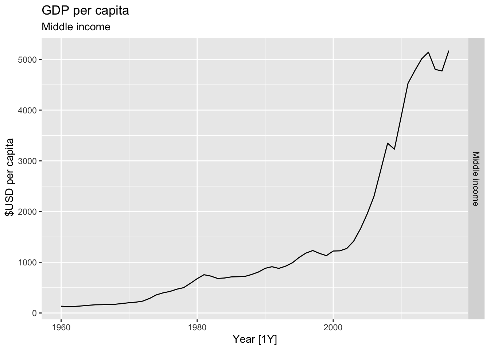
## Warning: Removed 35 rows containing missing values or values outside the scale range (`geom_line()`).## Warning: Removed 11 rows containing missing values or values outside the scale range (`geom_line()`).## Warning: Removed 21 rows containing missing values or values outside the scale range (`geom_line()`).## Warning: Removed 40 rows containing missing values or values outside the scale range (`geom_line()`).
## Warning: Removed 20 rows containing missing values or values outside the scale range (`geom_line()`).## Warning: Removed 40 rows containing missing values or values outside the scale range (`geom_line()`).## Warning: Removed 20 rows containing missing values or values outside the scale range (`geom_line()`).## Warning: Removed 47 rows containing missing values or values outside the scale range (`geom_line()`).## Warning: Removed 22 rows containing missing values or values outside the scale range (`geom_line()`).

## Warning: Removed 42 rows containing missing values or values outside the scale range (`geom_line()`).
## Warning: Removed 5 rows containing missing values or values outside the scale range (`geom_line()`).## Warning: Removed 15 rows containing missing values or values outside the scale range (`geom_line()`).## Warning: Removed 15 rows containing missing values or values outside the scale range (`geom_line()`).## Warning: Removed 40 rows containing missing values or values outside the scale range (`geom_line()`).## Warning: Removed 5 rows containing missing values or values outside the scale range (`geom_line()`).## Warning: Removed 30 rows containing missing values or values outside the scale range (`geom_line()`).## Warning: Removed 1 row containing missing values or values outside the scale range (`geom_line()`).## Warning: Removed 10 rows containing missing values or values outside the scale range (`geom_line()`).## Warning: Removed 27 rows containing missing values or values outside the scale range (`geom_line()`).## Warning: Removed 29 rows containing missing values or values outside the scale range (`geom_line()`).## Warning: Removed 22 rows containing missing values or values outside the scale range (`geom_line()`).## Warning: Removed 39 rows containing missing values or values outside the scale range (`geom_line()`).## Warning: Removed 41 rows containing missing values or values outside the scale range (`geom_line()`).## Warning: Removed 8 rows containing missing values or values outside the scale range (`geom_line()`).## Warning: Removed 5 rows containing missing values or values outside the scale range (`geom_line()`).## Warning: Removed 20 rows containing missing values or values outside the scale range (`geom_line()`).## Warning: Removed 30 rows containing missing values or values outside the scale range (`geom_line()`).## Warning: Removed 35 rows containing missing values or values outside the scale range (`geom_line()`).## Warning: Removed 10 rows containing missing values or values outside the scale range (`geom_line()`).## Warning: Removed 7 rows containing missing values or values outside the scale range (`geom_line()`).## Warning: Removed 53 rows containing missing values or values outside the scale range (`geom_line()`).
## Warning: Removed 52 rows containing missing values or values outside the scale range (`geom_line()`).
## Warning: Removed 17 rows containing missing values or values outside the scale range (`geom_line()`).## Warning: Removed 58 rows containing missing values or values outside the scale range (`geom_line()`). 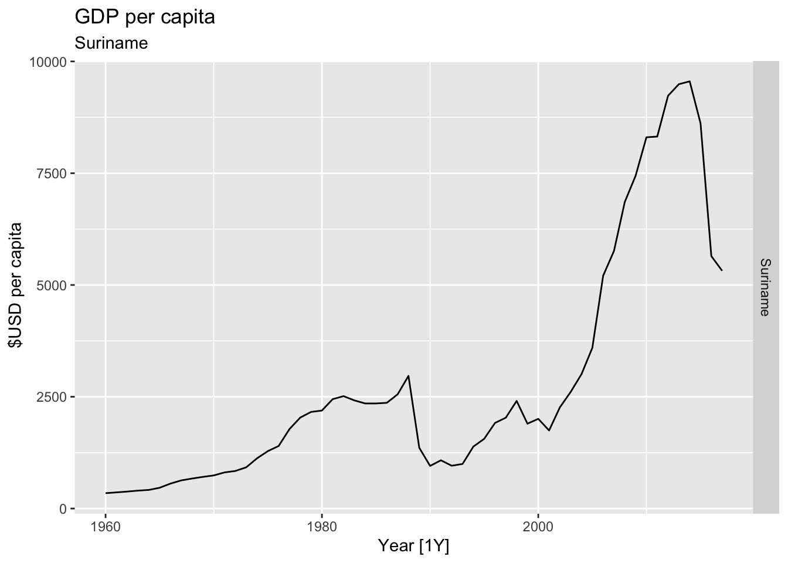
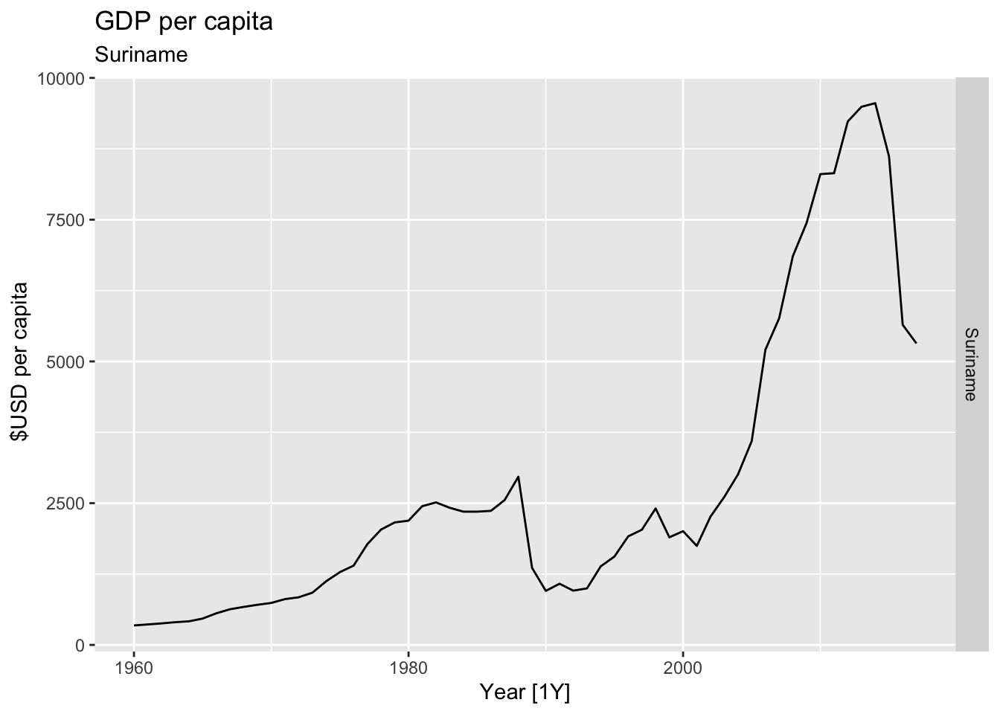
## Warning: Removed 10 rows containing missing values or values outside the scale range (`geom_line()`).## Warning: Removed 30 rows containing missing values or values outside the scale range (`geom_line()`).## Warning: Removed 28 rows containing missing values or values outside the scale range (`geom_line()`).## Warning: Removed 40 rows containing missing values or values outside the scale range (`geom_line()`).## Warning: Removed 15 rows containing missing values or values outside the scale range (`geom_line()`).## Warning: Removed 5 rows containing missing values or values outside the scale range (`geom_line()`).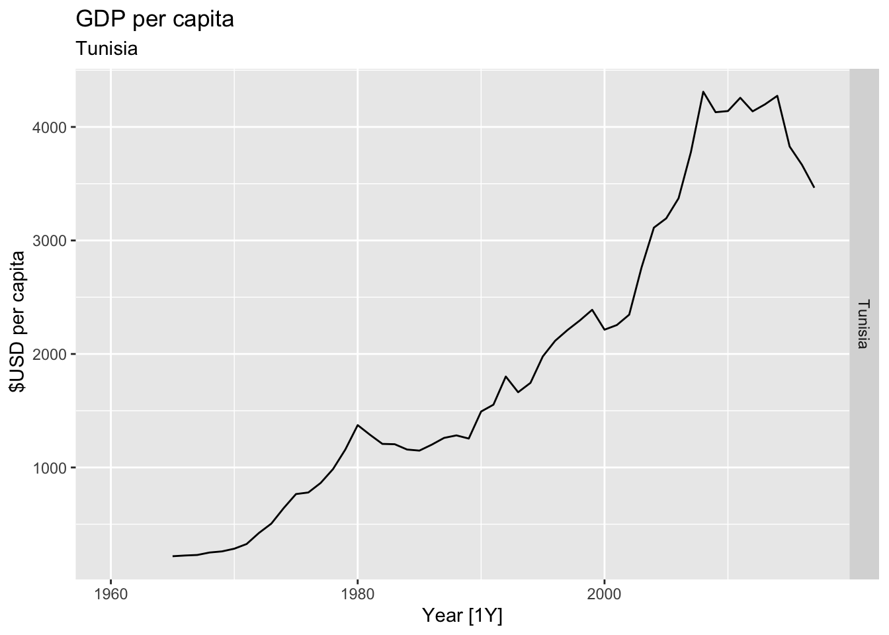
## Warning: Removed 27 rows containing missing values or values outside the scale range (`geom_line()`).## Warning: Removed 58 rows containing missing values or values outside the scale range (`geom_line()`).## Warning: Removed 30 rows containing missing values or values outside the scale range (`geom_line()`).## Warning: Removed 27 rows containing missing values or values outside the scale range (`geom_line()`).## Warning: Removed 15 rows containing missing values or values outside the scale range (`geom_line()`).## Warning: Removed 30 rows containing missing values or values outside the scale range (`geom_line()`).## Warning: Removed 19 rows containing missing values or values outside the scale range (`geom_line()`).## Warning: Removed 3 rows containing missing values or values outside the scale range (`geom_line()`).## Warning: Removed 25 rows containing missing values or values outside the scale range (`geom_line()`).## Warning: Removed 2 rows containing missing values or values outside the scale range (`geom_line()`).## Warning: Removed 4 rows containing missing values or values outside the scale range (`geom_line()`).## Warning: Removed 30 rows containing missing values or values outside the scale range (`geom_line()`).#Which country has the highest GDP per capita?
highest_countries <- (global_economy |>
mutate(GDP_per_capita = GDP / Population) |>
filter(Year == max(global_economy$Year)) |>
arrange(desc(GDP_per_capita)) |>
select(Country, GDP_per_capita) |>
head(10))$Country
for(country in highest_countries){
gdp <- global_economy |>
filter(Country == country) |>
mutate(GDP_per_capita = GDP / Population) |>
autoplot(GDP_per_capita) +
facet_grid(Country ~ ., scales = 'free_y') +
labs(title = 'GDP per capita', subtitle = paste('#', which(highest_countries == country, arr.ind = TRUE), country), y = ' $USD per capita') +
theme(legend.position = 'none')
print(gdp)
}## Warning: Removed 22 rows containing missing values or values outside the scale range (`geom_line()`).## Warning: Removed 10 rows containing missing values or values outside the scale range (`geom_line()`).# United States GDP from global_economy.
global_economy |>
filter(Country == 'United States') |>
autoplot(GDP) +
labs(title = 'GDP of United States', y = '$US')# Slaughter of Victorian “Bulls, bullocks and steers” in aus_livestock.
aus_livestock |>
filter(State == 'Victoria', Animal == 'Bulls, bullocks and steers') |>
autoplot(Count) +
labs(title = 'Slaughter of Bulls, bullocks and steers', subtitle = 'Victoria')# => Apply transformation to make variance constant
bulls <- aus_livestock |>
filter(State == 'Victoria', Animal == 'Bulls, bullocks and steers')
print(paste('Optimal lambda: ', BoxCox.lambda(bulls$Count)))## [1] "Optimal lambda: 0.161509864493434"bulls |>
mutate(Count_boxcox = box_cox(Count, lambda=BoxCox.lambda(bulls$Count))) |>
autoplot(Count_boxcox) +
labs(title = 'Slaughter of Bulls, bullocks and steers (BoxCox)', subtitle = 'Victoria')# Victorian Electricity Demand from vic_elec.
vic_elec |>
autoplot(Demand) +
labs(title = 'Victorian Electricity Demand', subtitle = 'Victoria', y='GWh')# apply transformation
lambda <- vic_elec |>
features(Demand, features = guerrero) |>
pull(lambda_guerrero)
vic_elec |>
mutate(Demand_cb = BoxCox(Demand, lambda = lambda)) |>
autoplot(Demand_cb) +
labs(title = 'Victorian Electricity Demand (BoxCox)', subtitle = 'Victoria', y='GWh')# Gas production from aus_production.
aus_production |>
autoplot(Gas) +
labs(y = "",
title = "Gas production in Australia")# => Apply transformation
lambda <- aus_production |>
features(Gas, features = guerrero) |>
pull(lambda_guerrero)
print(paste('Optimal BoxCox lambda:', lambda))## [1] "Optimal BoxCox lambda: 0.109517112981612"aus_production |>
autoplot(Gas, color = 'gray') +
geom_line(aes(y=box_cox(Gas, lambda)), color='red') +
labs(y = "",
title = latex2exp::TeX(paste0(
"Transformed gas production with $\\lambda$ = ",
round(lambda,2))))canadian_gas |>
autoplot(Volume) +
labs(title = 'Monthly Canadian gas production', y = 'Billions of cubic metres')lambda <- canadian_gas |>
features(Volume, features = guerrero) |>
pull(lambda_guerrero)
canadian_gas |>
mutate(Volume_bc = box_cox(Volume, lambda=lambda)) |>
autoplot(Volume, color='gray') +
geom_line(aes(y=Volume_bc), color='blue') +
labs(title = 'Monthly Canadian gas production', y = 'Billions of cubic metres')# => BoxCox is unhelpful due to seasonality
canadian_gas |>
model(stl = STL(Volume ~ trend(window=21) + season(window='periodic'))) |>
components() |>
autoplot()myseries <- aus_retail |>
filter(`Series ID` == sample(aus_retail$`Series ID`,1))
lambda <- myseries |>
features(Turnover, features = guerrero) |>
pull(lambda_guerrero)
myseries |>
autoplot(box_cox(Turnover, lambda))# Tobacco from aus_production
lambda <- aus_production |>
features(Tobacco, features = guerrero) |>
pull(lambda_guerrero)
aus_production |>
autoplot(Tobacco, color = 'gray') +
geom_line(aes(y = box_cox(Tobacco, lambda=lambda)), color='blue') +
labs(y = "",
title = latex2exp::TeX(paste0(
"Transformed tobacco production with $\\lambda$ = ",
round(lambda,2))))# Economy class passengers between Melbourne and Sydney from ansett
pass_mel_syd <- ansett |>
filter(Class == 'Economy', Airports == 'MEL-SYD')
lambda <- pass_mel_syd |>
features(Passengers, features = guerrero) |>
pull(lambda_guerrero)
pass_mel_syd |>
mutate(Pass_bc = box_cox(Passengers, lambda)) |>
autoplot(Pass_bc, color='blue') +
labs(y = "",
title = latex2exp::TeX(paste0(
"Transformed a number of passangers with $\\lambda$ = ",
round(lambda,2))),
subtitle = 'Economy class passengers between Melbourne and Sydney')# Pedestrian counts at Southern Cross Station from pedestrian
south_cross <- pedestrian |>
filter(Sensor == 'Southern Cross Station')
lambda <- south_cross |>
features(Count, features = guerrero) |>
pull(lambda_guerrero)
south_cross |>
mutate(Count_bc = box_cox(Count, lambda)) |>
autoplot(Count_bc, color='blue') +
labs(y = "",
title = latex2exp::TeX(paste0(
"Transformed a number of pedestrians with $\\lambda$ = ",
round(lambda,2))),
subtitle = 'Southern Cross Station')df <- data.frame(value = sample.int(7))
w <- c(0.067, 0.133, 0.200, 0.200, 0.200, 0.133, 0.067)
print(paste('3x5-MA = ',
round((df |>
mutate(`5-MA` = slider::slide_dbl(value, mean,
.before = 2,
.after = 2,
.complete = TRUE),
`3x5-MA` = slider::slide_dbl(`5-MA`, mean,
.before = 1,
.after = 1,
.complete = TRUE)) |>
filter(!is.na(`3x5-MA`)))$`3x5-MA`, 2),
', 7-term weighted MA = ',
round((cbind(df, w) |>
summarise(`7-term MA` = sum(value * w)))$`7-term MA`, 2)))## [1] "3x5-MA = 4 , 7-term weighted MA = 4"## Plot variable not specified, automatically selected `.vars = Gas`# => Seasonal fluctuations: summer - less gas production, winter - more,
# trend-cycle - increasing trend# b.
c_dec <- gas |>
model(c_dec = classical_decomposition(Gas, type='mul')) |>
components()
c_dec |>
autoplot()## Warning: Removed 2 rows containing missing values or values outside the scale range (`geom_line()`).# e.
gas$Gas[length(gas$Gas) / 2] = 300
gas |>
model(c_dec = classical_decomposition(Gas, type='mul')) |>
components() |>
autoplot(season_adjust)# f.
gas <- tail(aus_production, 5*4) |> select(Gas)
gas$Gas[length(gas$Gas)] = 300
gas |>
model(c_dec = classical_decomposition(Gas, type='mul')) |>
components() |>
autoplot(season_adjust)- The decomposition of the Australian quarterly labor force data into trend, seasonal, and remainder components reveals distinct patterns. In the first plot (Figure 3.19), the trend component shows a steady increase in the labor force over time, with a slight dip around the 1991/1992 period, indicating the effects of the recession. The seasonal component reflects regular fluctuations across the quarters, but these fluctuations are relatively small in magnitude, suggesting that the seasonal variation in labor force participation is limited compared to the overall trend. In the second plot (Figure 3.20), which displays the seasonal component, we can observe that the recession of 1991/1992 is indeed visible as a notable deviation from the baseline, particularly in the downward spikes during that period.
- The scale of the reminder component is much smaller than the trend, but the recession’s impact is clearly captured as a short-term anomaly, confirming the influence of the economic downturn on the labor market. Overall, the recession is most visible in the trend and remainder components.
## Plot variable not specified, automatically selected `.vars = Volume`## Plot variable not specified, automatically selected `y = Volume`
## Plot variable not specified, automatically selected `y = Volume`# b.
canadian_gas |>
model(stl = STL(Volume ~ trend(window=11) + season(window=21))) |>
components() |>
autoplot()## Plot variable not specified, automatically selected `y = Volume`#d.
canadian_gas |>
model(stl = STL(Volume ~ trend(window=11) + season(window=21))) |>
components() |>
autoplot(season_adjust)